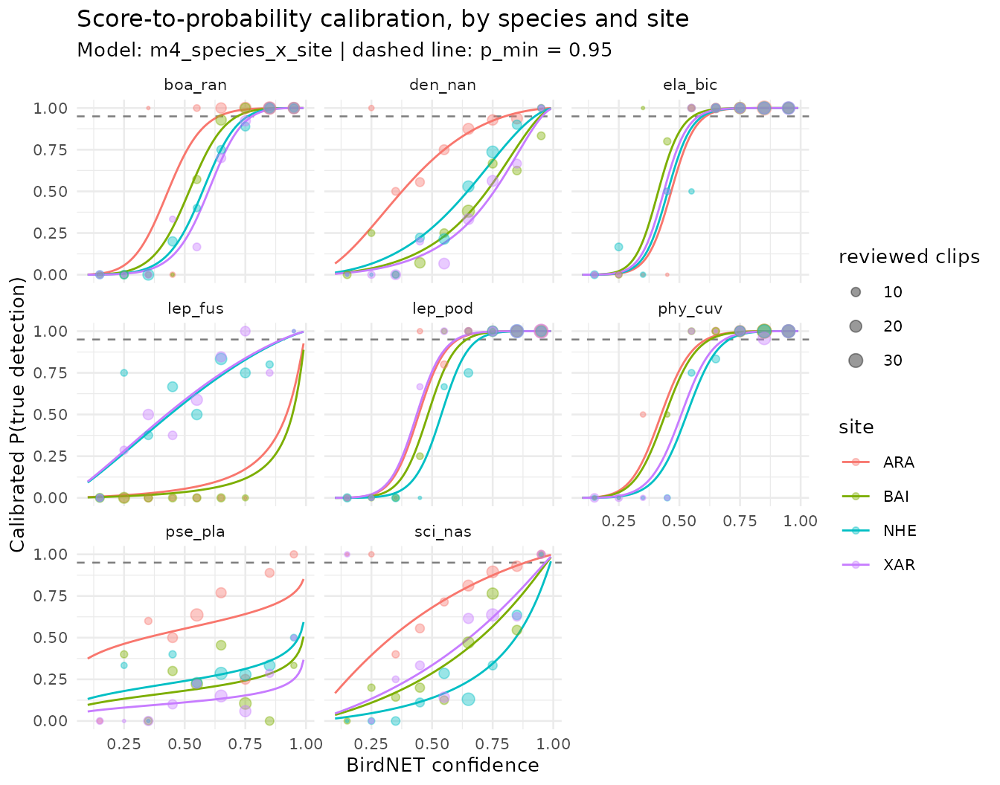

This vignette covers the second stage of sheepdog in detail: turning BirdNET confidence scores into probabilities that a detection is a true positive, scoring every detection, and building nightly detection histories. Each step is run on the example data shipped with the package.
library(sheepdog)
library(dplyr)
ex <- system.file("extdata", "example", package = "sheepdog")Why calibrate
A BirdNET confidence score is a classifier output in [0, 1], not a probability that the detection is correct. The BirdNET authors recommend converting the scores into probabilities of a true detection (Wood & Kahl 2024). One way to do so, with a sample of manually validated detections, is a logistic regression of the verdict on logit(score), applied, for instance, by Owens et al. (2026).
One curve for all species is rarely enough. The same score can mean different things for different species, because the score distributions of true and false detections differ among species, and for the same species at different sites, because the rate of false detections depends on background noise and the rate of true ones on how often the species is present. sheepdog therefore fits hierarchical logistic models in which the intercept and the slope on logit(score) can vary among species and among sites.
The example data
The example data are simulated
(data-raw/make_example_data.R). Eight anuran species were
recorded at four sites over six months, from October 2021 to March 2022.
When a species is present, its true detections have scores drawn from a
species-specific Beta distribution. Every species also produces false
positives in every recording, present or not, with scores drawn from a
second species-specific Beta distribution. For five species
(boa_ran, den_nan, lep_fus,
pse_pla, sci_nas) the two distributions
overlap widely; the other three (ela_bic,
lep_pod, phy_cuv) produce few false positives,
with low scores, and are well separated. The rate of false positives is
multiplied by a site noise factor (ARA 0.7, BAI 1.0, XAR 1.5, NHE 2.2).
Presence varies with season and site, including a random preference of
each species for each site. The same score therefore corresponds to
different probabilities of a true detection among species and sites. The
verdicts of the reviewed clips come from the simulated truth.
The reviewed clips are the
validation_by_clip_<site>.csv tables written by
post_validation(). read_validations() stacks
them, keeps the clips with a positive or negative verdict and a
confidence score, and adds logit_conf and the binary
response tp.
val_files <- list.files(file.path(ex, "validation"), full.names = TRUE)
val <- read_validations(val_files)
#> 2467 reviewed clips (1577 TP / 890 FP) of 8 species at 4 sites.
table(val$site, val$species)
#>
#> boa_ran den_nan ela_bic lep_fus lep_pod phy_cuv pse_pla sci_nas
#> ARA 80 80 80 33 80 80 80 80
#> BAI 80 80 80 56 58 80 80 80
#> NHE 80 80 80 80 80 80 80 80
#> XAR 80 80 80 80 80 80 80 80The clips were selected with the "top" design (the two
highest scores per site x species x night x hour, at most 80 per site x
species). Cells where a species was rarely detected hold fewer clips (as
few as 33). Precision differs widely among species:
val |>
group_by(species) |>
summarise(clips = n(), precision = mean(tp),
min_conf = min(confidence), median_conf = median(confidence))
#> # A tibble: 8 × 5
#> species clips precision min_conf median_conf
#> <fct> <int> <dbl> <dbl> <dbl>
#> 1 boa_ran 320 0.725 0.101 0.753
#> 2 den_nan 320 0.497 0.108 0.641
#> 3 ela_bic 320 0.894 0.1 0.810
#> 4 lep_fus 249 0.394 0.105 0.490
#> 5 lep_pod 298 0.856 0.104 0.840
#> 6 phy_cuv 320 0.9 0.107 0.845
#> 7 pse_pla 320 0.312 0.106 0.648
#> 8 sci_nas 320 0.497 0.121 0.657Candidate models
calibration_models() returns the family of candidate
models. All of them are binomial regressions of tp on
logit_conf. They differ in how the calibration curve is
allowed to vary among species and sites.
models <- calibration_models()
cat(paste0(names(models), ": ", vapply(models, deparse1, "")), sep = "\n")
#> m0_global: tp ~ logit_conf
#> m1_species_intercept: tp ~ logit_conf + (1 | species)
#> m2_species_slope: tp ~ logit_conf + (logit_conf | species)
#> m3_plus_site: tp ~ logit_conf + (logit_conf | species) + (1 | site)
#> m4_species_x_site: tp ~ logit_conf + (logit_conf | species) + (1 | site:species)-
m0_global: one curve for all species and sites (a GLM). -
m1_species_intercept: species shift the curve along the score axis. -
m2_species_slope: species also differ in how steeply the probability rises with the score. -
m3_plus_site: as m2, plus a site intercept shared by all species. -
m4_species_x_site: as m2, plus an intercept for each site x species combination. This is the most flexible model.
Models m1 to m4 are binomial GLMMs fitted with
lme4::glmer().
Comparing models by cross-validation
compare_calibration_models() fits every candidate with
k-fold cross-validation and computes the area under the ROC curve (AUC)
on the held-out folds. Folds are stratified within site x species, so
every level appears in both the training and the test sets. The fold
assignment uses a fixed seed. Five folds run in a few
seconds on these data.
cv <- compare_calibration_models(val, models, k_folds = 5)
#> Cross-validation (5 folds) of 5 models...
cv |> select(model, auc_mean, auc_sd, n_failed)
#> # A tibble: 5 × 4
#> model auc_mean auc_sd n_failed
#> <chr> <dbl> <dbl> <int>
#> 1 m4_species_x_site 0.942 0.00564 0
#> 2 m3_plus_site 0.928 0.00640 0
#> 3 m2_species_slope 0.916 0.00556 0
#> 4 m1_species_intercept 0.902 0.00544 0
#> 5 m0_global 0.862 0.0120 0The table is ordered by mean AUC. Read the differences between models
together with the spread among folds (auc_sd), and check
n_failed (folds whose fit failed and were left out of the
mean; none here). In the example, each added level of structure raises
the mean AUC by more than the fold-to-fold standard deviation: from
0.862 for the global model to 0.902 with species intercepts, 0.916 with
species slopes, 0.928 with site intercepts and 0.942 with site x species
intercepts. When differences are of the same order as
auc_sd, the order of the table can change with
k_folds or seed.
AUC measures discrimination (whether true detections score higher than false ones), not calibration (whether a predicted probability of 0.9 is correct nine times in ten). Two models with equal AUC can still give different probabilities, so the comparison is a first filter, not the whole decision.
Scoring the probabilities and choosing a model
The comparison also scores the predicted probabilities themselves on
the held-out folds. The log-loss and the Brier score are proper scoring
rules: their expected value is best when the predicted probabilities are
the true ones, so they reward correct probabilities and not only their
ranking (Gneiting & Raftery 2007). The log-loss penalises confident
mistakes heavily, which is where p_min operates. The
calibration intercept and slope come from a logistic regression of the
verdicts on the logit of the predicted probabilities in each test fold:
a well calibrated model has intercept 0 and slope 1, and a slope below 1
means probabilities that are too extreme. prop_singular is
the share of fold fits that were singular.
cv |>
select(model, logloss_mean, logloss_sd, brier_mean, cal_intercept,
cal_slope, prop_singular)
#> # A tibble: 5 × 7
#> model logloss_mean logloss_sd brier_mean cal_intercept cal_slope prop_singular
#> <chr> <dbl> <dbl> <dbl> <dbl> <dbl> <dbl>
#> 1 m4_s… 0.291 0.0103 0.0941 0.00430 0.994 1
#> 2 m3_p… 0.317 0.0119 0.104 -0.00268 0.991 0.2
#> 3 m2_s… 0.337 0.0102 0.112 -0.000235 0.987 0.2
#> 4 m1_s… 0.379 0.00934 0.123 -0.00279 0.992 0
#> 5 m0_g… 0.436 0.0172 0.142 -0.000629 1.00 0select_calibration_model() applies a selection rule to
this table. "best_auc" takes the highest mean AUC, the rule
calibrate() uses by default in 2.x.
"one_se_logloss" leaves out the models that are singular in
most folds and, among the rest, keeps the simplest one whose mean
log-loss is within one standard error of the lowest; it will be the
default from 3.0.0.
select_calibration_model(cv, "best_auc")
#> [1] "m4_species_x_site"
select_calibration_model(cv, "one_se_logloss", k_folds = 5)
#> [1] "m3_plus_site"Here the highest AUC belongs to m4_species_x_site, singular in 100 %
of the folds, and the log-loss rule retains m3_plus_site.
calibration_models(uncorrelated = TRUE) adds a sixth
candidate, the m4 structure without the correlation between the species
intercepts and slopes, which is the term that makes m4 singular (see the
next section):
models_u <- calibration_models(uncorrelated = TRUE)
cv_u <- compare_calibration_models(val, models_u, k_folds = 5)
#> Cross-validation (5 folds) of 6 models...
cv_u |> select(model, auc_mean, logloss_mean, logloss_sd, prop_singular)
#> # A tibble: 6 × 5
#> model auc_mean logloss_mean logloss_sd prop_singular
#> <chr> <dbl> <dbl> <dbl> <dbl>
#> 1 m4_species_x_site 0.942 0.291 0.0103 1
#> 2 m5_species_x_site_uncorrelated 0.941 0.292 0.0112 0
#> 3 m3_plus_site 0.928 0.317 0.0119 0.2
#> 4 m2_species_slope 0.916 0.337 0.0102 0.2
#> 5 m1_species_intercept 0.902 0.379 0.00934 0
#> 6 m0_global 0.862 0.436 0.0172 0
select_calibration_model(cv_u, "one_se_logloss", k_folds = 5)
#> [1] "m5_species_x_site_uncorrelated"calibrate() takes the rule in select and
the extra candidate with uncorrelated = TRUE. Whether the
retained model is a sound fit is a separate question, taken up next.
Fitting the calibration model
fit_calibration() fits a model to all the reviewed clips
and stores the species and site levels with it, for
score_detections() and plot_calibration(). We
fit every candidate, because whether a GLMM is singular is part of the
choice:
fits <- lapply(models, function(f) fit_calibration(val, f))
#> Warning: Singular fit (boundary) of the calibration model tp ~ logit_conf +
#> (logit_conf | species) + (1 | site:species): a variance component is estimated
#> at zero or a correlation at +-1. Check lme4::VarCorr(fit) and consider a
#> simpler model.
vapply(fits[-1], lme4::isSingular, logical(1))
#> m1_species_intercept m2_species_slope m3_plus_site
#> FALSE FALSE FALSE
#> m4_species_x_site
#> TRUE
fit_global <- fits$m0_global
fit_full <- fits$m4_species_x_site
coef(fit_global)
#> (Intercept) logit_conf
#> -0.5310926 1.5993695
lme4::fixef(fit_full)
#> (Intercept) logit_conf
#> -0.2816419 2.7948430
lme4::VarCorr(fit_full)
#> Groups Name Std.Dev. Corr
#> site:species (Intercept) 1.19448
#> species (Intercept) 0.81804
#> logit_conf 1.89240 1.000The site x species intercepts of m4 have a standard deviation of 1.19
on the logit scale, a large effect: at a given score, the odds of a true
detection differ several-fold among sites for the same species. The fit
is nevertheless singular, which is why fit_calibration()
warned above (it is the only singular fit among the candidates): the
correlation between the species intercepts and slopes is estimated at 1,
on the boundary of its range. With 8 species, a correlation between two
random effects is poorly identified. A singular fit means that the
random-effect structure is more complex than the data can support. The
predictions can still be used, but this variance component should not be
interpreted. The singularity lies in the species term, not in the site x
species term that gives m4 its advantage. m2 and m3 share the same
species term and are not flagged as singular, but in m3 the correlation
is already 0.98, close to the boundary: the species intercepts and
slopes are nearly collinear in every model. Here the choice is between
m4, singular in a component that does not drive its predictions but
clearly better in the cross-validation, and m3, a regular fit with a
lower AUC. We keep m4 for the rest of the vignette and do not interpret
its species correlation. Fitting m4 without the correlation (with
(1 | species) + (0 + logit_conf | species)) would be a
further option, but it is not one of the built-in candidates.
Calibration curves
plot_calibration() draws the calibrated probability
against the score, one panel per species and one line per site. The
points give the observed precision of the reviewed clips in 0.1-wide
score bins, sized by the number of clips. The dashed line marks
p_min.
plot_calibration(fit_full, val, p_min = 0.95, model_name = "m4_species_x_site")
Look for:
-
Flat or shallow curves. A species whose curve rises
slowly, or never reaches
p_min, is poorly separated from its false positives. Its calibrated detections should not enter the analyses, or only in a sensitivity analysis. - Sites that diverge. A site whose curve lies far from the others for the same species may differ in noise, in the number of false positives, or in the review. Check its clips before trusting its probabilities.
- Curves that miss the points. Systematic departures from the observed precision indicate lack of fit, usually in the score bins with the largest points.
-
Few clips. Curves supported by small points (few
clips per bin) are extrapolations. The
"top"design gives few clips at low scores, so the lower part of each curve rests mainly on the shared fixed effects.
In the example, all of these appear. The three well-separated species
(ela_bic, lep_pod, phy_cuv) have
steep curves that cross p_min at moderate scores and lie
close together among sites. pse_pla has a shallow curve
that stays below p_min at every site: its false positives
overlap its true detections too much for any score to be reliable.
sci_nas and den_nan reach p_min
only near the top of the score range, except at ARA, the quietest site,
where their curves lie to the left. lep_fus diverges most
among sites: its curves at ARA and BAI lie far below those at NHE and
XAR. The species is rarely present at ARA and BAI, so most of its
detections there are false, and these two cells also hold the fewest
reviewed clips.
The practical consequence is the score at which each site x species
reaches p_min. Under the global model this score is the
same everywhere:
grid <- tidyr::expand_grid(
species = factor(levels(val$species), levels = levels(val$species)),
site = factor(levels(val$site), levels = levels(val$site)),
confidence = seq(0.10, 0.99, by = 0.01)
) |>
mutate(logit_conf = qlogis(confidence),
p_global = predict(fit_global, newdata = pick(everything()),
type = "response"),
p_full = predict(fit_full, newdata = pick(everything()),
type = "response"))
# lowest score with P(TP) >= 0.95; NA if never reached below 0.99
first_conf <- function(conf, p) {
if (any(p >= 0.95)) min(conf[p >= 0.95]) else NA_real_
}
thresholds <- grid |>
group_by(species, site) |>
summarise(conf_global = first_conf(confidence, p_global),
conf_full = first_conf(confidence, p_full),
.groups = "drop")
thresholds |> print(n = Inf)
#> # A tibble: 32 × 4
#> species site conf_global conf_full
#> <fct> <fct> <dbl> <dbl>
#> 1 boa_ran ARA 0.9 0.65
#> 2 boa_ran BAI 0.9 0.72
#> 3 boa_ran NHE 0.9 0.77
#> 4 boa_ran XAR 0.9 0.78
#> 5 den_nan ARA 0.9 0.8
#> 6 den_nan BAI 0.9 0.95
#> 7 den_nan NHE 0.9 0.93
#> 8 den_nan XAR 0.9 0.96
#> 9 ela_bic ARA 0.9 0.61
#> 10 ela_bic BAI 0.9 0.56
#> 11 ela_bic NHE 0.9 0.6
#> 12 ela_bic XAR 0.9 0.58
#> 13 lep_fus ARA 0.9 NA
#> 14 lep_fus BAI 0.9 NA
#> 15 lep_fus NHE 0.9 0.91
#> 16 lep_fus XAR 0.9 0.91
#> 17 lep_pod ARA 0.9 0.61
#> 18 lep_pod BAI 0.9 0.65
#> 19 lep_pod NHE 0.9 0.7
#> 20 lep_pod XAR 0.9 0.6
#> 21 phy_cuv ARA 0.9 0.62
#> 22 phy_cuv BAI 0.9 0.63
#> 23 phy_cuv NHE 0.9 0.71
#> 24 phy_cuv XAR 0.9 0.69
#> 25 pse_pla ARA 0.9 NA
#> 26 pse_pla BAI 0.9 NA
#> 27 pse_pla NHE 0.9 NA
#> 28 pse_pla XAR 0.9 NA
#> 29 sci_nas ARA 0.9 0.89
#> 30 sci_nas BAI 0.9 0.98
#> 31 sci_nas NHE 0.9 0.99
#> 32 sci_nas XAR 0.9 0.97Under m4, the score needed to reach P(TP) >= 0.95 ranges from 0.56 to 0.99 among site x species combinations, and 6 combinations (lep_fus, pse_pla) never reach it, against a single threshold of 0.9 under the global model. A single score threshold, or a single calibration curve, would be too lenient for some species and sites and too strict for others.
Scoring every detection
score_detections() reads the complete selection tables
(not only the reviewed clips) and predicts P(TP) for every detection of
a calibrated species. The tables are passed as a vector named by site;
the names must match the sites of the calibration. A site absent from
the calibration is scored with the species effects only, with a warning.
The night of a detection is its recording date, or the day before for
recordings that start before dawn_hour.
sites <- c("ARA", "XAR", "BAI", "NHE")
tables <- setNames(file.path(ex, "birdnet", sites,
"BirdNET_SelectionTable.txt"), sites)
scored <- score_detections(tables, fit_full, min_confidence = 0.1) |>
suppressMessages() # one line per site with the number of detections
scored |> select(site, species, night, confidence, p_tp)
#> # A tibble: 7,553 × 5
#> site species night confidence p_tp
#> <chr> <fct> <chr> <dbl> <dbl>
#> 1 ARA boa_ran 20211001 0.504 0.734
#> 2 ARA den_nan 20211001 0.372 0.493
#> 3 ARA lep_fus 20211001 0.267 0.0173
#> 4 ARA pse_pla 20211001 0.873 0.702
#> 5 ARA lep_pod 20211001 0.846 1.000
#> 6 ARA lep_pod 20211001 0.479 0.648
#> 7 ARA boa_ran 20211001 0.739 0.989
#> 8 ARA sci_nas 20211001 0.804 0.907
#> 9 ARA den_nan 20211001 0.240 0.267
#> 10 ARA sci_nas 20211001 0.623 0.785
#> # ℹ 7,543 more rowsNightly detection histories
detection_history() aggregates the scored detections by
site x species x night. A detection is reliable when its calibrated
probability is at least p_min; the threshold applies to
P(TP), not to the score. A night has a detection when it holds at least
k reliable detections (min_detections_night, the repetition
rule). The columns detection_k1 to
detection_k3 give the same rule with k = 1, 2 and 3;
detection uses the chosen k.
history <- detection_history(scored, p_min = 0.95, min_detections_night = 1)
history
#> # A tibble: 872 × 10
#> site species night n_detections n_reliable p_tp_max detection_k1
#> <chr> <fct> <chr> <int> <int> <dbl> <int>
#> 1 ARA boa_ran 20211001 10 4 0.999 1
#> 2 ARA boa_ran 20211006 13 10 1.000 1
#> 3 ARA boa_ran 20211011 16 12 1.000 1
#> 4 ARA boa_ran 20211016 11 5 1.000 1
#> 5 ARA boa_ran 20211021 8 3 1.000 1
#> 6 ARA boa_ran 20211101 13 9 1.000 1
#> 7 ARA boa_ran 20211106 9 7 1.000 1
#> 8 ARA boa_ran 20211111 11 5 0.997 1
#> 9 ARA boa_ran 20211116 12 8 1.000 1
#> 10 ARA boa_ran 20211121 7 3 0.999 1
#> # ℹ 862 more rows
#> # ℹ 3 more variables: detection_k2 <int>, detection_k3 <int>, detection <int>
summarise_history(history) |> print(n = Inf)
#> # A tibble: 32 × 6
#> site species nights nights_k1 nights_k2 nights_k3
#> <chr> <fct> <int> <int> <int> <int>
#> 1 ARA boa_ran 30 30 30 29
#> 2 ARA den_nan 30 22 12 6
#> 3 ARA ela_bic 24 20 20 20
#> 4 ARA lep_fus 21 0 0 0
#> 5 ARA lep_pod 22 20 18 17
#> 6 ARA phy_cuv 24 21 20 20
#> 7 ARA pse_pla 30 0 0 0
#> 8 ARA sci_nas 30 11 4 0
#> 9 BAI boa_ran 29 15 14 13
#> 10 BAI den_nan 30 3 1 0
#> 11 BAI ela_bic 22 20 20 20
#> 12 BAI lep_fus 24 0 0 0
#> 13 BAI lep_pod 18 10 10 10
#> 14 BAI phy_cuv 26 20 20 19
#> 15 BAI pse_pla 30 0 0 0
#> 16 BAI sci_nas 30 0 0 0
#> 17 NHE boa_ran 29 10 9 7
#> 18 NHE den_nan 30 5 1 0
#> 19 NHE ela_bic 28 20 20 20
#> 20 NHE lep_fus 30 2 0 0
#> 21 NHE lep_pod 28 20 20 19
#> 22 NHE phy_cuv 29 25 25 24
#> 23 NHE pse_pla 30 0 0 0
#> 24 NHE sci_nas 30 0 0 0
#> 25 XAR boa_ran 27 13 13 9
#> 26 XAR den_nan 28 0 0 0
#> 27 XAR ela_bic 27 25 25 22
#> 28 XAR lep_fus 28 1 0 0
#> 29 XAR lep_pod 28 28 26 25
#> 30 XAR phy_cuv 24 15 15 14
#> 31 XAR pse_pla 28 0 0 0
#> 32 XAR sci_nas 28 2 0 0nights counts the nights with any scored detection, and
nights_k1 to nights_k3 the nights with a
detection under each rule. The gap between nights and
nights_k1 is the number of nights whose detections were all
below p_min: nights that a rule on the raw output (any
detection above min_confidence) would have counted as
detections. Species whose curves never reach p_min have no
night with a detection, whatever their scores.
Choosing p_min and k
p_min and k trade false-positive nights against missed
nights. A high p_min with k = 1 accepts a night on one very
reliable detection; a lower p_min with k = 2 or 3 requires
repeated, moderately reliable detections. The choice should follow the
analysis: occupancy models with false-positive parameters can tolerate a
lenient rule, whereas analyses with no false-positive component (for
example, ordinations of community matrices) call for a strict one. The
sensitivity of the number of nights with a detection to both settings is
cheap to check:
sensitivity <- lapply(c(0.80, 0.90, 0.95, 0.99), function(p) {
detection_history(scored, p_min = p) |>
summarise(p_min = p, k1 = sum(detection_k1), k2 = sum(detection_k2),
k3 = sum(detection_k3))
}) |>
bind_rows()
sensitivity
#> # A tibble: 4 × 4
#> p_min k1 k2 k3
#> <dbl> <int> <int> <int>
#> 1 0.8 460 400 360
#> 2 0.9 394 351 318
#> 3 0.95 358 323 294
#> 4 0.99 315 288 258The number of nights with a detection under k = 1 falls from 460 to
315 across this range of p_min. If the conclusions of the
downstream analysis change across the range, report the results under
more than one setting.
The same check applies to the choice of model. Scoring with the global model and comparing the histories shows how many site x species x nights change, and for which species:
history_global <- score_detections(tables, fit_global) |>
suppressMessages() |>
detection_history(p_min = 0.95)
compare <- inner_join(history, history_global,
by = c("site", "species", "night"),
suffix = c("_full", "_global"))
compare_sp <- compare |>
group_by(species) |>
summarise(nights = n(),
k1_full = sum(detection_k1_full),
k1_global = sum(detection_k1_global),
differ_k1 = sum(detection_k1_full != detection_k1_global))
compare_sp
#> # A tibble: 8 × 5
#> species nights k1_full k1_global differ_k1
#> <fct> <int> <int> <int> <int>
#> 1 boa_ran 115 68 50 18
#> 2 den_nan 118 30 22 22
#> 3 ela_bic 101 85 65 20
#> 4 lep_fus 103 3 4 1
#> 5 lep_pod 96 78 66 12
#> 6 phy_cuv 103 81 66 15
#> 7 pse_pla 118 0 21 21
#> 8 sci_nas 118 13 29 18The global model changes the history of 127 of 872 site x species x nights under k = 1. It accepts fewer nights than m4 for boa_ran, den_nan, ela_bic, lep_pod, phy_cuv, which reach P(TP) >= 0.95 below the common threshold at some or all sites, and more nights for lep_fus, pse_pla, sci_nas, whose calibrated probabilities m4 places lower.
When the global model is enough
The global model is enough when the hierarchical models do not
improve the cross-validated AUC beyond the fold-to-fold variation, when
the species and site curves of a hierarchical model lie close together
near p_min, and when the detection histories do not change
between models. None of these holds in the example. With very few
species or sites the variance components are poorly estimated, and a
simpler model (a species effect only, or the global model) is the more
defensible choice; with many species, or species and sites known to
differ in noise, the hierarchical models keep the threshold on P(TP)
consistent across them.
Model checks
Before using calibrated probabilities, check that:
-
The GLMM converged.
fit_calibration()warns when the refitted model is singular, as it did for m4 above, and convergence warnings oflme4::glmer()are passed on.compare_calibration_models()drops a fold whose fit fails from the mean AUC, warns about it and counts it inn_failed. Inspect the refitted model directly:lme4::isSingular(fit_full) #> [1] TRUE fit_full@optinfo$conv$lme4$messages #> [1] "boundary (singular) fit: see help('isSingular')"Here the only message is the singular fit discussed above; there are no convergence warnings. Convergence warnings (as opposed to a singular fit) mean the estimates should not be used: simplify the random-effect structure, or review more clips.
The cross-validation supports the choice. Read
auc_sdwithauc_mean. Do not prefer a more complex model on a difference smaller than the fold-to-fold variation.The calibration curves are sensible. Curves should increase with the score, follow the observed precision, and rest on enough clips near
p_min.calibration_effort()estimates how many clips per site x species are needed for a stable AUC.
The calibration also assumes that, within a score level, the reviewed
clips are representative of all the detections of that species at that
site. The model is conditional on the score, so the "top"
design, which oversamples high scores, does not bias it as long as this
holds. It fails if the clips were chosen by another criterion related to
correctness (for example, only clips that sounded clear, or only the
nights of peak activity), or if the reviewed period differs from the
scored one in noise or in species composition.
The calibrate() wrapper
calibrate() runs the whole stage in one call. It reads
the clips, compares the candidate models, refits the one chosen by the
rule in select, plots the calibration curves (if ggplot2 is
installed), scores every detection, builds the detection history and
writes all the outputs to output_dir. With the default
select = "best_auc" it refits the model with the highest
mean AUC; when that refit is singular, as m4 is here, it warns (through
fit_calibration()) but keeps the model. With
select = "one_se_logloss" and
uncorrelated = TRUE it applies the rule of the previous
sections. Read the comparison, calibration_model.txt and
the curves it writes before using its output.
out_dir <- file.path(tempdir(), "calibration")
res <- calibrate(validation_files = val_files,
prediction_tables = tables,
output_dir = out_dir,
select = "one_se_logloss", uncorrelated = TRUE,
p_min = 0.95, min_detections_night = 1, k_folds = 5) |>
suppressMessages()
deparse1(res$fit@call$formula) # the model calibrate() refitted
#> [1] "tp ~ logit_conf + (1 | species) + (0 + logit_conf | species) + (1 | site:species)"
list.files(out_dir)
#> [1] "calibrated_detections_ARA.csv" "calibrated_detections_BAI.csv"
#> [3] "calibrated_detections_NHE.csv" "calibrated_detections_XAR.csv"
#> [5] "calibration_curves.png" "calibration_model.rds"
#> [7] "calibration_model.txt" "detection_summary.csv"
#> [9] "model_comparison.csv" "nightly_detection_history.csv"nightly_detection_history.csv is the input of the
occupancy and community analyses (see
vignette("frognet-workflow")). Five folds and the example’s
2467 clips run in seconds; a project with thousands of clips and many
species takes longer, and effort_curve = TRUE adds the
effort curve.
References
Gneiting, T., & Raftery, A. E. (2007). Strictly proper scoring rules, prediction, and estimation. Journal of the American Statistical Association, 102, 359–378. https://doi.org/10.1198/016214506000001437
Owens, G., Wood, C. M., Hunt, T. J., Bussolini, L. T., Kreisl, A., Alves, F., & Stojanovic, D. (2026). Passive acoustic monitoring of the rare orange-bellied parrot: automated detection using BirdNET-based transfer learning. bioRxiv. https://doi.org/10.64898/2026.06.01.729442
Wood, C. M., & Kahl, S. (2024). Guidelines for appropriate use of BirdNET scores and other detector outputs. Journal of Ornithology, 165, 777–782. https://doi.org/10.1007/s10336-024-02144-5